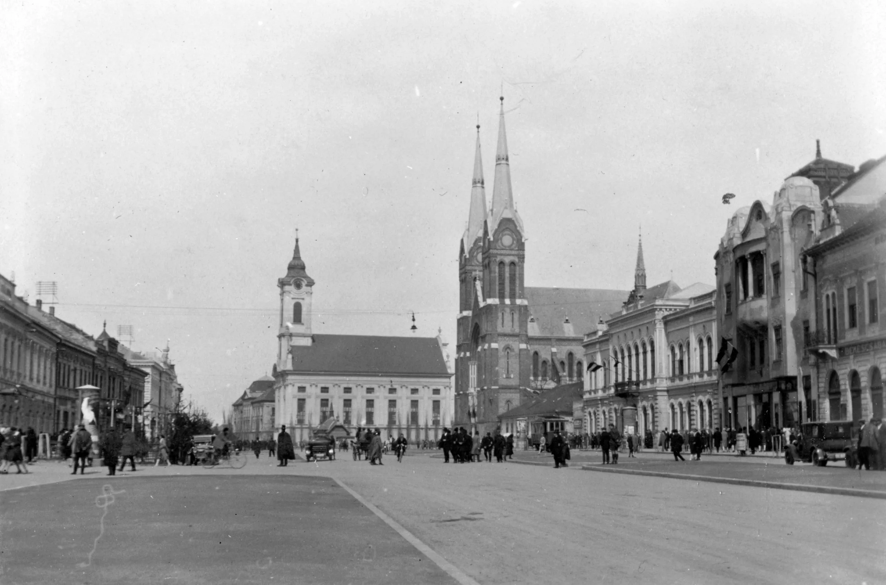
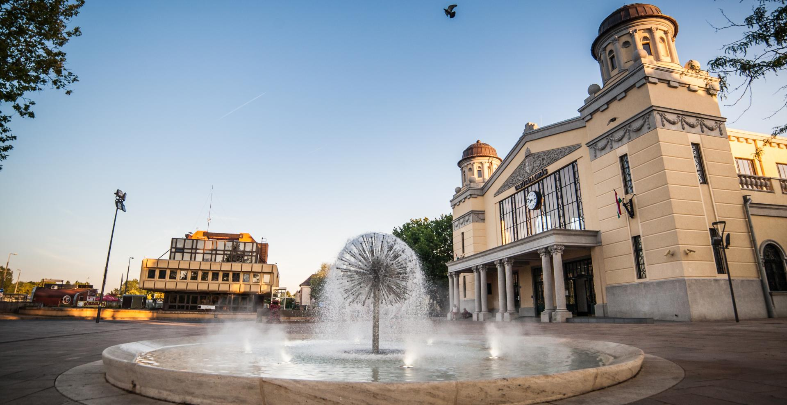

Kezdetek
Békéscsaba területe már az őskorban is lakott volt, amit a környéken talált régészeti leletek is bizonyítanak. A város nevét először 1330-ban említették írásos formában "Chaba" néven. A török hódoltság alatt a település elnéptelenedett, csak a 18. században kezdett újra életre kelni.
Újratelepülés és fejlődés
1718-ban kezdődött meg a szervezett újratelepülés, főként szlovák és német jobbágyokkal. A 19. századra Békéscsaba jelentős mezőgazdasági és kereskedelmi központtá fejlődött, 1873-ban pedig városi rangot kapott. A vasút 1858-as megépülésével tovább gyorsult a fejlődés.


A 20. század
Az 1900-as évek elején Békéscsaba már megyei jogú város volt. Az I. világháború után, 1923-ban lett Békés vármegye székhelye. A II. világháború után iparosodása felgyorsult, de megőrizte mezőgazdasági jellegét is.
Napjainkban
Ma Békéscsaba modern város, amely megőrizte hangulatos belvárosát és gazdag néprajzi hagyományait. Fontos kulturális, oktatási és gazdasági központ, amely vonzza a turistákat és befektetőket egyaránt.